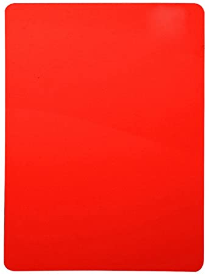

Carrera futbolistica
| Equipos | Temporada/as | Gol/es |
Tarjeta/s roja/s  | Tarjeta/s amarilla/s | ||||
|---|---|---|---|---|---|---|---|---|
| Parrila del Mejillón | 07/08- 08/09 |
27 | 0 | 0 | ||||
| 1º de Mayo | 09/10 to 12/13 |
13 | 0 | 4 | ||||
| Rayo Sanfernando | 13/14 to 17/18 |
12 | 5 | 11 |
Hasta aqui |